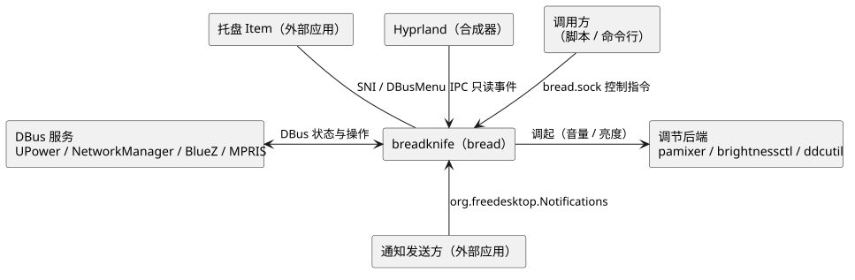
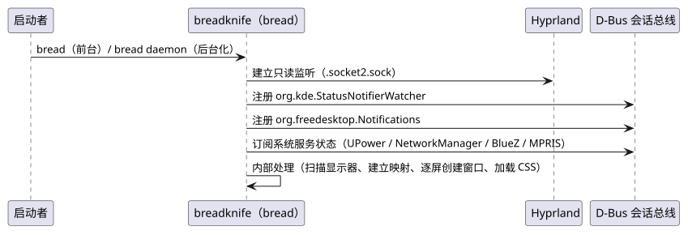
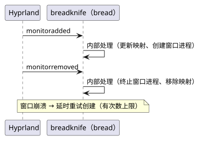
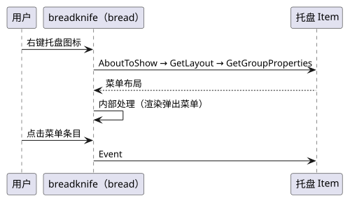
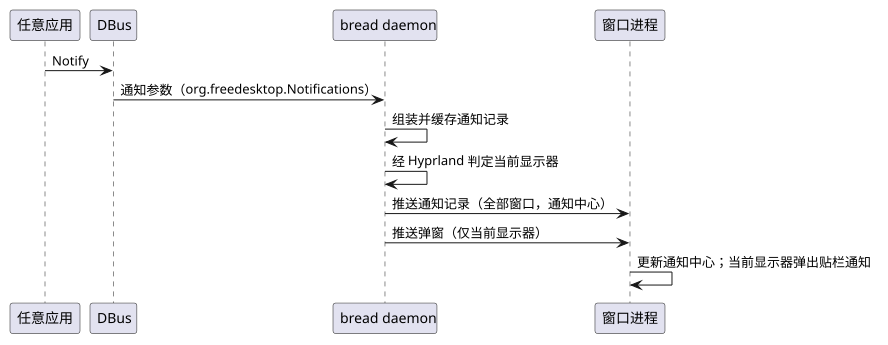

breadknife 用户契约
本文档面向使用方（用户与二次开发者）：总体架构、用户可见约定、边界流程、对外接口与 UI 契约。 能力级边界以 ABOUT.html 为权威，外部依赖契约见 PROVIDER.html，实现骨架见 CORE.html。
1. 术语
托盘域术语（Watcher、Item、渲染直出等）沿用成员库定义，见 breadpan/USER.html §1，本文档不重复定义。
| 术语 | 定义 |
|---|---|
| 最小化工作区 | Hyprland 特殊工作区 special:minimized；窗口是否属于最小化集合以该工作区归属判定 |
| 最小化窗口 | 位于最小化工作区的普通窗口；最小化动作由 Hyprland 配置或外部工具提供，bread 只负责收集与恢复 |
| 最小化托盘 | 屏幕底部自动隐藏的窗口入口；按显示器收集本屏最小化窗口，提供恢复与关闭 |
2. 通用约定
- 缺失降级：服务 / 后端缺失时——入口组件自动隐藏（如无电池设备的电池、服务缺席的网络），弹出面板内操作项灰置并提示。
- 边框取色：所有边框与分隔线一律取
gold；无边框元素不受约束。 - Hover：一切元素的 Hover 均为
surface填充、文字色不变；组件小节另有说明的除外。
3. 架构与流程
3.1. 总体架构

- Hyprland IPC 是唯一的外部状态来源，驱动全部任务栏更新；
- 托盘协议由 bread 内部封装，任务栏不接触 SNI / DBusMenu 协议细节；
- 有副作用（有状态）操作统一经后台执行；不影响追踪状态的操作允许直通。
3.2. 时序：启动

3.3. 时序：显示器插拔

3.4. 时序：控制指令与热重载
3.5. 时序：托盘右键菜单

3.6. 时序：通知到达

4. 接口
4.1. Unix Socket（控制接口）
路径：/run/user/$UID/bread.sock；契约：文本行协议，一行一条指令，以 \n 结尾，处理结果不回写。由 bread 客户端转发（脚本亦可直接使用）。
| 指令 | 行为 |
|---|---|
open <name> [-m <monitor>] | 打开指定窗口（缺省全部已连接显示器；-m 限定显示器） |
close <name> [-m <monitor>] | 关闭指定窗口（同 open 的显示器口径） |
open-all / close-all | 打开 / 关闭全部窗口 |
exit | 退出 daemon（终止全部窗口进程） |
reload | 热重载：广播全部窗口按跟踪的 CSS 路径重读 |
4.2. 控制指令模型
pub enum ControlCommand {
Open { name: String, monitor: Option<String> },
Close { name: String, monitor: Option<String> },
OpenAll,
CloseAll,
Exit,
Reload,
}5. UI
5.1. 样式基础变量
bg#231F1F主背景surface#3E3542次级浮层：弹窗、通知底、输入框底fg#D6CAB6正文文字、滑块轨道muted#B0B4BC中性图标purple#89338Ehover/选中填充、亮底上的文字purple-light#E593E7提亮：浮层上的文字、hover 高亮gold#9D7E4D细线、进度填充、弱文字cream#FFF7E4亮面背景、选中/hover 文字red#CC2A47警告/危险- 语义仅供参考，一切以 §5.2 各组件的取用为准。
5.2. 组件样式规范
按组件分节给出可视化样例与限定条件。注记文字构成视觉契约；样例仅作示意，数值以注记与 CSS 为准。
5.2.1. 任务栏窗口与按钮
常规
Hover 态
- 任务栏窗口：高 30px、四角无圆角，背景
bg，底边 1px 细线。 - 按钮：透明底、无边框、圆角 6px、padding 0；Hover 态填充
surface，文字色不变（通用规则见 §2）。 - 内容布局为左（Workspace 按钮）—中（活动窗口标题）—右（托盘、控制中心入口）三区。
5.2.2. Workspace 按钮
工作区 2
文档 - BreadKnife
终端
文件
设置
...
- 从左至右：无窗口、无窗口且活跃、有窗口、有窗口且活跃、有窗口且紧急、有窗口且紧急且活跃。
- 基底：无窗口＝直径 4px 圆点，有窗口＝20×15px 长方形（圆角半径 10px），均取
purple；紧急＝长方形整体取fg，仅限有窗口。 - 活跃叠点直径 4px 取
fg；紧急基底上叠点取purple，紧急态即基底与叠点两色互换；无窗口且活跃时叠点与基底圆点等大重叠，视觉为单个fg圆点。 - 悬停工作区按钮显示窗口标题浮层：按 Hyprland 焦点历史排序（最近聚焦在前），最多 4 条；超出时第五条固定为「...」，不显示具体计数；无窗口显示「无窗口」。首期仅标题，截图预览为后续可选扩展。
- 浮层宽 220px、
surface底fg字、1pxgold边框、圆角 8px、内边距 6px／水平 8px；工作区名gold加粗，窗口行 1 行省略。 - 可见性矩阵见 ABOUT.html「界面交互」；状态过渡 150ms ease。
5.2.3. 托盘与托盘菜单
- 托盘区域整体（含各图标按钮）与菜单同底色
fg；图标直接置于该底色上，不做按图标明暗反相的底色垫高。 - 图标按钮 22×22px、圆角 6px；失联图标置灰（不透明度 35%）。
- 图标按首见序（breadpan USER §1）从左到右排列：已有图标不因其它图标加入、移除或属性变化而移动，新图标追加在最右侧；同一 Item 的 id 重键保持原位。
- 菜单容器圆角 8px、内边距 4px、无边框，以投影与任务栏分离；菜单行圆角 4px、水平内边距 10px、最小宽 120px。
- 菜单文字取
bg；Hover 行purple填充配cream字（例外，见 §2）；勾选标记gold；子菜单箭头muted；禁用行不透明度 45%。 - 分隔线 1px，上下边距 3px、水平边距 6px。
- 同级条目悬停驻留 150ms 展开子菜单；已有弹窗显示时，托盘图标悬停驻留 150ms 直接切换菜单。
5.2.4. 控制中心
音量60%
亮度40%
- 常驻入口与弹出面板的内容构成见 ABOUT.html「界面交互」。
- 入口容器与通用按钮一致：透明底、圆角 6px、内边距 2px 10px，Hover 态
surface。 - 弹出面板：圆角 10px、内边距 12px、最小宽 260px。
- 滑块：滑轨高 4px（圆角 2px）取
fg，已填充段与滑块 Hover 取purple-light；滑块 12px 圆形取purple。
5.2.5. 通知弹窗
应用名
✕
通知标题
通知正文；过长行在中部截断并显示省略号。
应用名
✕
紧急通知标题
紧急通知默认常驻，直至手动关闭。
- 宽 300px，单条最高 400px；圆角 15px，边框 1px；内边距 12px／水平 8px。
- 标题居中、正文左对齐；过长行在中部截断显示省略号；关闭按钮固定在卡片右上角。
- 图标左置 32px、按图标主题递归查找，图标与文字间距 16px。
- 通知携带动作时，在正文下方按顺序显示动作按钮；默认文字，
action-icons时以动作 key 作为图标名、label 作为提示，图标未命中回退文字。点击按钮触发对应动作并关闭该条（resident除外）；左键点击卡片触发默认动作并关闭，无动作时仅关闭。 - 正文按
body-markup解析规范允许的标记，不支持的标记按纯文本降级；body-hyperlinks仅让http/https/mailto链接可点击，经默认处理程序打开，其它协议按纯文本；body-images仅加载本地file://与图标主题名，不访问网络，按比例缩放且不超过正文区宽度，加载失败降级为替代文本。 - 普通与低优先级：
surface底fg字，应用名弱文字gold；紧急：red底cream字。 - 多条自任务栏正下方纵向堆叠，水平中心与标题区域中心对齐，新通知插入顶部（最新在最上，不按紧急度重排），条间分隔线 1px；同屏最多 10 条，超出显示隐藏计数。
- 超时：通知请求 0 为常驻、正数按毫秒；未指定时低优先级 30s，普通与紧急常驻。到期即时移除卡片，不另设淡出动画；超时只让贴栏卡片消失。
- 持久化：通知条目在 bread 运行期间保留，不落盘、不跨重启；只有用户关闭/清理、发送方撤回或同 id 替换、动作触发（
resident除外）、退出 bread 才彻底移除。保留语义与能力声明见 bnote/PROVIDER §4.5。 transient绕过持久化，超时即删除条目；resident使动作触发后保留条目。- 提示音：
suppress-sound为真时不播放；否则优先sound-file，其次sound-name；宿主后端为canberra-gtk-play，缺席时不播放且不声明sound能力。 - 仅当前显示器弹出；当前显示器取 Hyprland 焦点显示器，查询失败时回退首个显示器。
- 通知中心打开期间贴栏通知隐藏但不关闭，计时照常；隐藏期间超时的贴栏卡片消失，通知中心条目保留（
transient除外），关闭通知中心后不再重新显示该贴栏卡片。 - 弹出位置、标题居中、关闭按钮与按键、超时行为见 ABOUT.html「界面交互」。
5.2.6. 通知中心
全部清理
▾应用 A✕
构建完成✕
任务 #128 已成功结束，产物已上传。
磁盘空间不足✕
根分区剩余空间低于 5%，日志与历史快照仍在增长；本条正文超出两行，多余部分在此处裁剪显示省略号，悬停可查看全文内容并继续列举更多细节以填满第二行。
部署完成✕
生产环境已切换到新版本。
… 还有 2 条
▸应用 B✕
!
通知中心暂时不可用
另一个通知服务正在运行，bread 无法接管 org.freedesktop.Notifications。
- 点击标题区域切换通知中心：面板打开时再次点击标题区域关闭；点击弹窗外或按 Escape 同样关闭。
- 面板顶边紧贴任务栏底边，水平位置锚定标题区域中心（面板水平中心与标题区域水平中心对齐）；面板宽 40% 屏宽，高度随消息列表动态变化，上限 100% 屏高。
- 达到 100% 屏高后不再增高，面板内部滚动；面板底
bg，圆角 10px、边框 1px、内边距 4px。 - 消息按应用聚合：聚合标题为应用名，点击可展开/收缩，收缩后只保留聚合标题；组按最后一条消息的时间从新到旧排序，最后推送通知的应用在最上；组内消息同样从新到旧排序，新消息在最前。
- 聚合标题右侧带关闭按钮，点击清空本组全部消息；聚合标题与清理按钮：
fg底bg字，圆角 6px，与托盘同语言。 - 组内超过 3 条时，默认只显示最新 3 条，余下折叠为一条「…」条目；点击「…」展开本组全部消息，展开期间隐藏其它组，点击该组聚合标题收起并恢复其它组。
- 每条消息：普通
surface底fg字；紧急red底cream字（与通知弹窗一致）；圆角 8px；标题至多 1 行、正文至多 2 行，超出裁剪显示省略号，悬停卡片显示全文；关闭按钮与标题同行置右。 - 通知携带动作时，在正文下方按顺序显示动作按钮；默认文字，
action-icons时以动作 key 作为图标名、label 作为提示，图标未命中回退文字。点击按钮触发对应动作并关闭该条（resident除外）；左键点击卡片触发默认动作并关闭，无动作时仅关闭；中键或关闭按钮关闭该条。 - 顶部一键清理全部按钮，位于右上角。
- 不可用态：通知服务启动失败或运行中终止时，面板保持相同外框与定位，内容区居中显示「通知中心暂时不可用」、失败说明与刷新按钮；不显示清理按钮、应用分组与消息卡。
- 手动重试：刷新按钮位于失败说明正文下方，点击后重新装配通知服务；成功则恢复正常列表 / 空态，仍失败则保留错误态。宿主不自动重试、不排队、不替换已有通知服务。
- 弹出触发、悬停查看全文与左键/中键行为见 ABOUT.html「界面交互」。
- 通知中心弹出时贴栏通知的显隐与计时见 §5.2.5。
5.2.7. 最小化托盘
构建日志
✕
文档 - BreadKnife
✕
终端
✕
- 每屏一条，面板水平居中于屏幕底部；无最小化窗口时完全隐藏，不占用底部输入区；有条目时保留 2px 高全宽触发条，指针进入后弹出面板，离开面板或触发条 300ms 后收起。
- 面板高 64px、内边距 6px、圆角 12px、底边距 8px；面板宽随条目增长，上限 88% 屏宽，超出时条目区横向滚动。
- 条目高 48px、宽 160px，图标 32px 左置，标题 1 行、超出省略，关闭键固定在条目右侧；条目横向排列。
- 面板
surface底fg字、1pxgold边框；条目透明底，Hoverpurple底cream字；关闭键取muted，Hover 取red；图标按窗口 class 从图标主题查找，未命中使用通用占位图标。 - 左键点击条目恢复窗口并聚焦；中键或关闭键关闭窗口；右键无动作（暂不实现菜单）。托盘不抢键盘焦点。
- 窗口进入最小化工作区即加入，按进入时间从旧到新排列，新条目追加在最右侧；标题变化实时更新，窗口移出或关闭即移除。
- 恢复目标为该窗口所属显示器的当前活动工作区；所属显示器移除后按 Hyprland 的新归属重新归类。
- 托盘不提供最小化动作；在 Hyprland 配置中把窗口移入
special:minimized即可被收集，推荐键位见 BUILD.html。